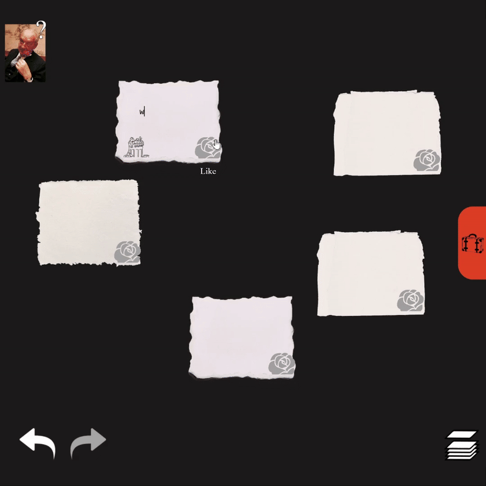
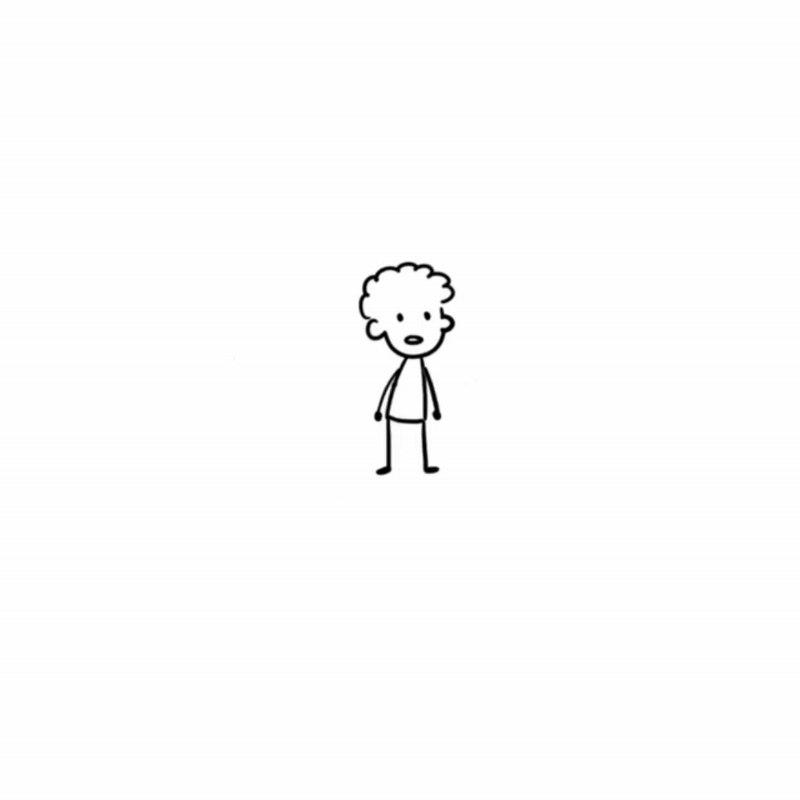
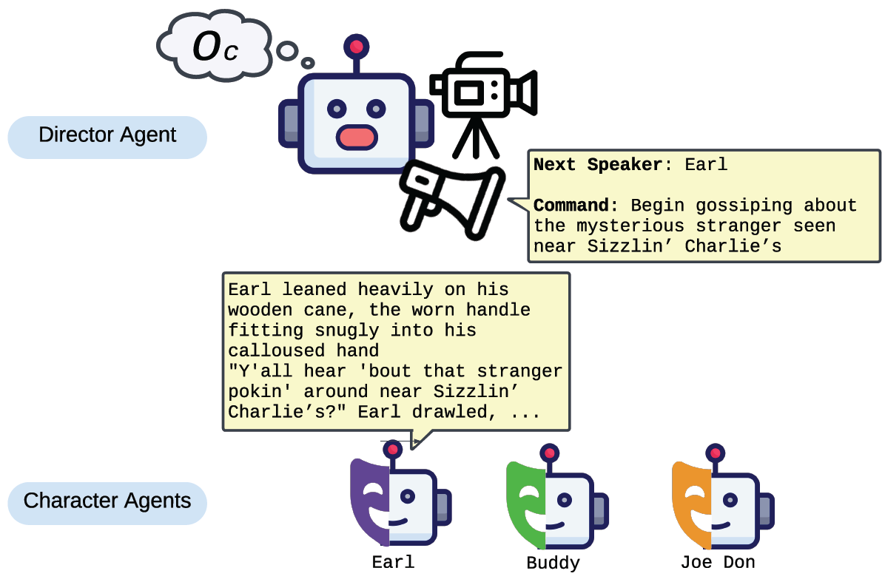
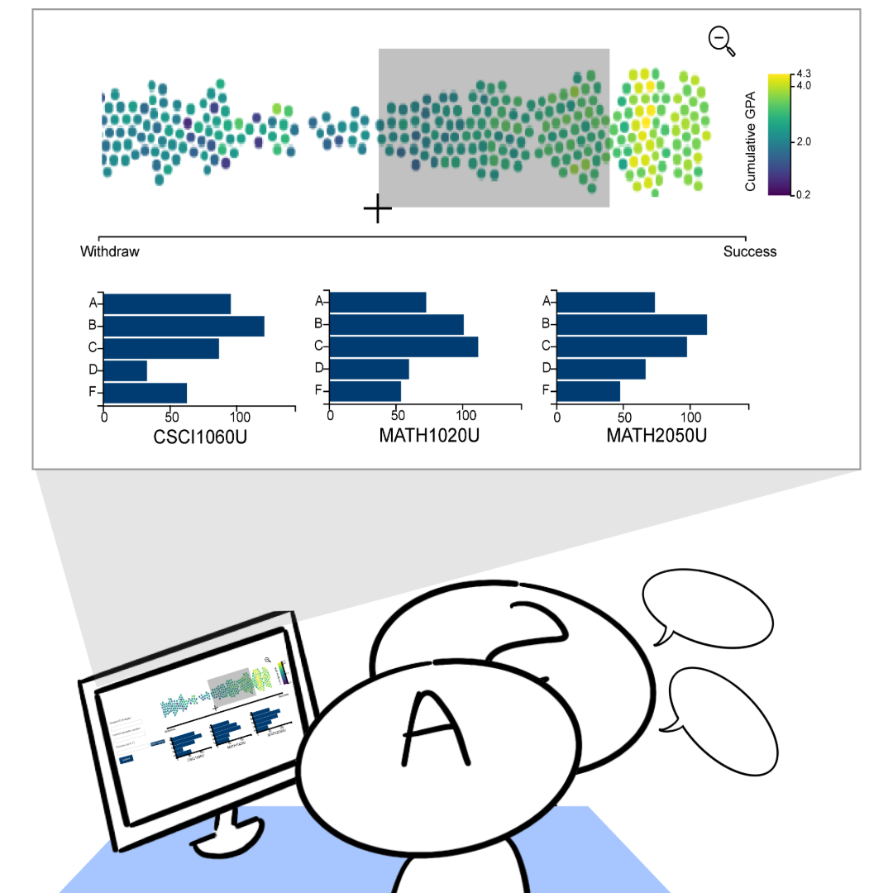
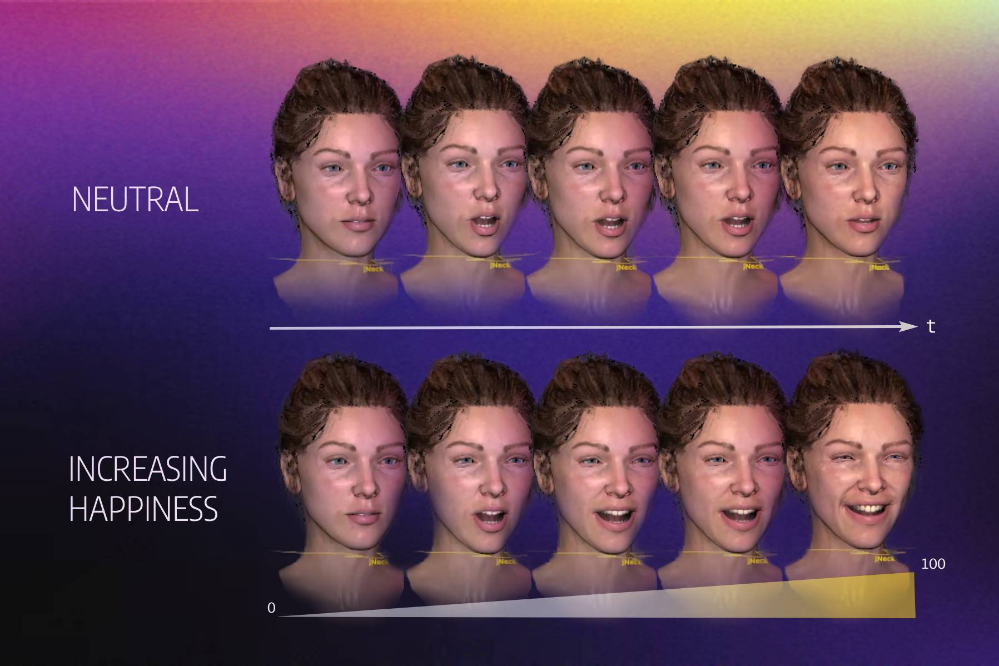
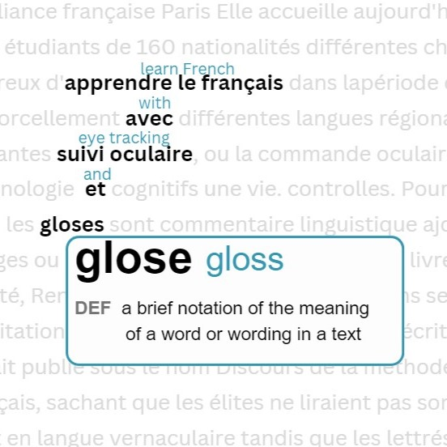
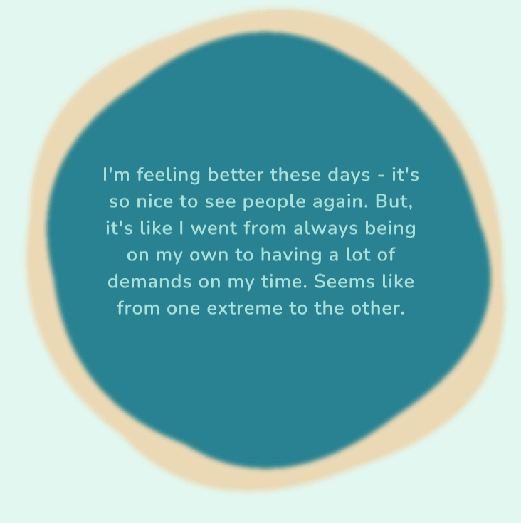
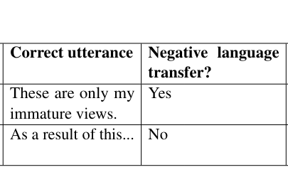

|
Zixin (Nicole) Zhao My name is Zixin (read as zee-shin) and I am also occasionally Nicole.
I'm currently a PhD student in Computer Science at the University of Toronto under the
joint supervision of Fanny Chevalier and
Gerald Penn.
I previously completed a MSc at Ontario Tech University under the supervision of Christopher Collins
developing a gaze based reading aid for language learners.
I completed a BSc majoring in Electrical Engineering and minoring in Computing Science at the University of Alberta.
Email / CV / Scholar / Twitter / LinkedIn |


|
ResearchI am currently focused on studying ways to support creative writing using visualizations. In tandem with examining AI's ability to understand narrative texts. I previously worked within language learning, developing systems that take implicit feedback from gaze to aid language learners while reading. |
Publications |
|

|
C&C 2025
Nabokov's Cards: An LLM-Assisted Co-Writing System to Support Bottom-Up Creative Writing
Dashiel Cerrera, Zixin Zhao, Ashish Thomas, Daniel Wigdor project demo / paper / bibtex Supporting bottom-up creativity using LLMs with a system inspired by Nabokov's Cards. |
|

|
CHI 2025
Making the Write Connections: Linking Writing Support Tools with Writer Needs
Zixin Zhao, Damien Masson, Youngho Kim, Gerald Penn, Fanny Chevalier project page / paper / bibtex Data triangulation to align tools from prior literature and commercial tools to creative writer's needs. |
|

|
In2Writing 2025
Multi-Agent Based Character Simulation for Story Writing
Tian Yu, Ken Shi, Zixin Zhao, Gerald Penn paper / bibtex Generating stories using LLM-based multi-agents. |
|

|
EduVis 2024
AdVizor: Using Visual Explanations to Guide Data-Driven Student Advising
Riley Weagant, Zixin Zhao, Adam Bradley, Christopher Collins paper / bibtex Visualization to suport advisors with exploring student outcome predictions during academic advising sessions. |
|

|
GI 2024
Make it Happier! Discretizing and Amplifying Happiness in Animated Faces
Zixin Zhao, Jessica Bo, Karan Singh project page Mapping out levels of happiness using non-linear FACS to control AUs and create realistic smiling faces. |
|

|
Master's Thesis, 2023
Gloss Positioning for a Gaze Aware L2 Reading Aid
Zixin Zhao, Christopher Collins paper / bibtex Language learning application for reading in your second language where definitions and translations of words that the system thinks you don't know shows up automatically. |
|

|
DIS 2022
Covid Connect: Chat-Driven Anonymous Story-Sharing for Peer Support
Christopher Collins, Simone Arbour, Nathan Beals, Shawn Yama, Jennifer Laffier, Zixin Zhao project page / paper / bibtex Using a reflective chatbot to connect community members together during the Covid-19 pandemic. |
|

|
NAACL 2021
Negative language transfer in learner English: A new dataset
Leticia Farias Wanderley, Nicole Zhao, and Carrie Demmans Epp paper / bibtex Dataset annotated with negative transfer related errors made by Chinese learners of English. |
Miscellanea |
|
Instructor, Her Code Camp, Curriculum development and teaching, Aug 2024 - present
Panelist, Web-Based Surveys - Battling the Bots, Research Roundtable Series, 2024 Judge, GenAI Genesis, 2024 |
|
This website is based on Jon Barron's code |